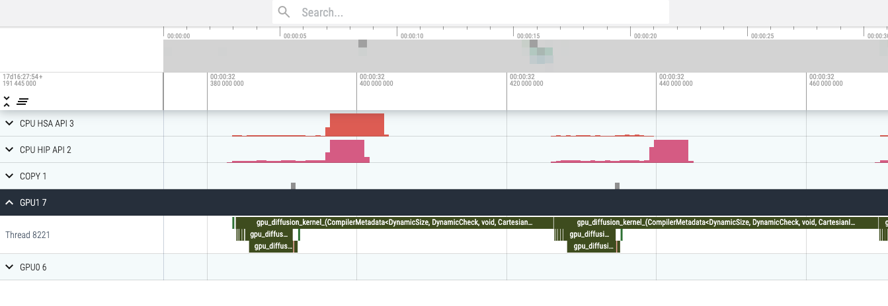
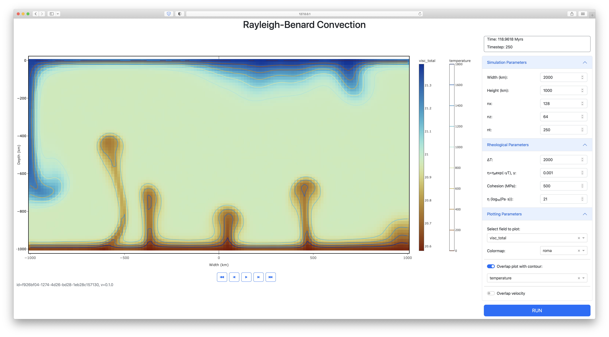

We held our fourth GPU4GEO Julia hackathon on September 11-15, 2023 in Black Forest (DE), focussing on a wide range of Julia topics. Hereafter a glimpse into the progress made by some participants on various Julia-related projects.
FastIce.jl distributed module
Ivan Utkin, Ludovic Räss
During the 4th edition of the hackathon, we worked on enabling the distributed computations in our ice flow code FastIce.jl. We use KernelAbstractions.jl (KA) for backend-agnostic computing using both GPUs and CPUs. Since GPU kernels execute asynchronously with the CPU host, it is necessary to synchronize the GPU before so that the results of the computations become available. For distributed MPI computations, we need to overlap data transfers and computations to ensure good scalability. This overlap can be achieved either by using special objects called streams that guarantee ordering of GPU operations. However, streams are backend-dependent, so in KA another approach is used, where the ordering is guaranteed within a Julia task.
During this hackathon, I managed to write the logic behind task creation and synchronisation, based on the idea of exchangers suggested by Valentin Churavy. Ludovic ported the diffusion benchmark to the new KA-based API, and profiled both on CUDA and AMDGPU backends, with excellent overlap between physics computations and MPI data exchange.
Combining MAGEMin and t8code through Julia - with parallelization and visualization
Boris Kaus, Hendrik Ranocha
MAGEMin is the new computational thermodynamics that we released last year, of course along with its Julia interface MAGEMin_C.jl. Judging from the amount of emails we receive about it, it appears to be quite popular in the community. The easiest way to use it is through its graphical user interface, which is based on MATLAB as we started developing it in our pre-Julia time. The major downside of that is that it is not freely available. As a result, using it in teaching is often tricky (with students using many different operating systems). We are therefore very interested to move away from MATLAB and port it fully to Julia. Over the last 6 months or so, we experimented with various approaches to create GUI's in Julia (Makie.jl, Genie.jl, and Dash.jl) and decided that Dash.jl is likely to best serve our needs. It allows creating GUIs that fully run in a webpage and can also be deployed on a central server while providing nice graphics.
A crucial part of the whole process is to have a way to create meshes that automatically zoom in on the phase boundaries.
In MATLAB we used a custom-build adaptive mesh refinement method for this. During the Hackathon, Boris and Hendrik spent time
on a new prototype of MAGEMin, the Mineral Assemblage Gibbs Energy
Minimization package written in C. Using the existing Julia bindings and the binaries created with BinaryBuilder.jl,
they combined MAGEMin with the C/C++ libraries p4est
and t8code for adaptive mesh refinement - using the corresponding Julia bindings
P4est.jl and T8code.jl including
binaries from BinaryBuilder.jl, of course. Combined with shared-memory parallelization using Base.Threads from Julia
and visualization, the new prototype is already 1.5x faster than the mature MATLAB interface, even when both call the same C-library.
Importantly, it is also straightforward to use triangular instead of quadrilateral elements for the mesh, or extend this to 3D
(if we wish to compute pseudosections as a function of pressure, temperature and chemistry, for example).
Meanwhile, Nicolas Riel spend time as a remote hackathon participant to work on plotting the resulting meshes with Plotly. Whereas it will still take some time to build the full Dash-based GUI, many of the crucial steps have now been resolved already. Some of these modifications (like multithreading) are scheduled to be ported in the next release of MAGEMin_C.
Various improvements (CI systems, documentation, ...)
Hendrik Ranocha
Hendrik spent some time on improving different packages in various aspects. Besides reviewing quite a few PRs, he contributed to the Julia ecosystem as follows.
- Use package extensions introduced in Julia v1.9 to reduce the latency of GeoParams.jl
- Add automatic code spell checking (e.g., GeoParams.jl and T8code.jl)
- Improve the performance of Trixi.jl (e.g., multi-threading on ARM, allocations with non-periodic domains)
- Improve the documentation of Trixi.jl (e.g., a new tutorial and more reproducibility information)
- Various software maintenance tasks (e.g., updates for deprecated functionality, automating dependency updates
Start developing Geodynamic modelling applications using Julia
Lorenzo Candioti
During the Hackathon, my primary objective was to start developing Geodynamic modelling applications using the Julia programming language. I dedicated my efforts to the development of partial differential equation (PDE) solvers tailored to purely thermal and hydrothermal problems, employing an assortment of discretization techniques.
Throughout the week, I created models to forecast how thermal and hydrothermal systems behave in both one-dimensional (1D) and two-dimensional (2D) scenarios. These models encompass solutions for the steady-state and changing conditions described by the heat equation and Darcy's law. I incorporated various time integration methods, both implicit and explicit, alongside diverse boundary conditions. The video below demonstrates the solution of 2D porous convection using an implicit time integration approach for temperature and fluid pressure, in addition to flux boundary conditions.
In addition to solver development, I further programmed a routine to generate automatic visual output from HPC simulations on a HPC cluster. This program is also written in Julia and can be executed after the simulation has completed to generate mp4 files from data stored as hdf5 files.
The Hackathon provided an excellent opportunity for me to make rapid progress in my Julia-based Geodynamic modelling projects. These advancements will serve as the foundation for my ongoing research endeavours. In essence, the event accelerated my work and set the stage for my current research initiatives.
Making a GUI for LaMEM using Dash.jl
Jamison Assunção, Jacob Frasunkiewicz, Boris Kaus, and Hao Liu
LaMEM (Lithosphere and Mantle Evolution Model) is a parallel 3D numerical code developed to simulate thermo-mechanical geodynamical processes such as mantle-lithosphere interactions for rocks that exhibit a visco-elasto-plastic rheology. While LaMEM can be installed and used with several methods, the easiest way to use it is via its Julia interface called LaMEM.jl.
However, LaMEM.jl is used in a script-like manner that can be a barrier for new users. We developed a GUI (Graphics User Interface) using both Dash.jl and Dash Bootstrap Components with the objective of developing some toy scenarios for new users to get familiarized with the numerical code and the scenarios themselves.
The developed interface runs on the browser and can easily be hosted in a single machine for people to access it. The advantages of this setup are those of compatibility and portability, which also safeguards the integrity of each user's work from external interference. The GUI streamlines the steps to define the geometric, rheological, and plotting parameters of each scenario. Most notably, it is able to run LaMEM.jl and plot the results on screen while the simulation is running, also providing the user with some controls to better visualize the data that is being displayed.
The GUI also allows users to customize their visualizations with ease. They can effortlessly choose the specific field for plotting, select the most suitable color-map, overlay contours onto the heatmap, and even opt to include velocity vectors for a comprehensive analysis.
